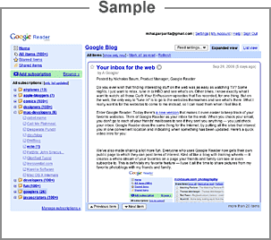

Add to Google
OpenPIV - Blog
Blog
http://www.openpiv.net/1/feed
Google offers two different ways to keep up-to-date with your favorite sites:
Your Google homepage
brings together Google functionality and content from across the web, on a single page.
or
Google Reader
makes it easy to keep up with the latest content from a large number of sites, all on a single reading list.
Add to Google homepage
Add to Google Reader
